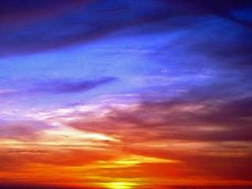
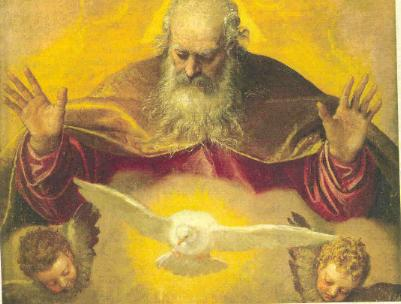
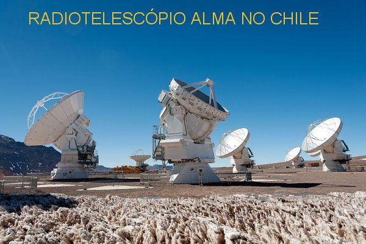
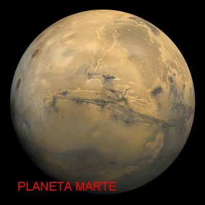
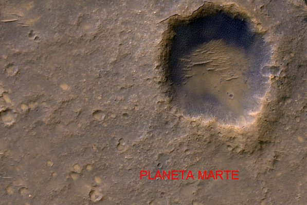
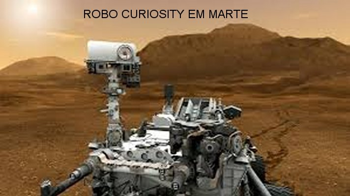

UNIVERSO DIVINO

EXPERIÊNCIA DO CÉU
DEUS é o principio e o fim da nossa vida. Desse modo, a verdadeira e plena felicidade do ser humano está onde se encontra o SENHOR, no Céu, vivendo com ELE e NELE.
Santa Francisca Roma teve a grande alegria de ser escolhida para conhecer de perto a última Vontade do SENHOR e presenciar visões inesquecíveis no Paraíso de DEUS.
Tudo começou naquele dia, quando ela rezando na Capela do Anjo, que era o seu local preferido na Basílica de Santa Maria Nova, em Roma, depois de receber a Sagrada Comunhão Eucarística, durante a Santa Missa, entrou em êxtase, e seu espírito foi conduzido por uma imensa luz através do espaço e a seguir penetrou numa outra luz fortemente brilhante, com um brilho tão intenso que não lhe permitia qualquer visão, até que a deixou no Paraíso Divino, num ambiente encantador, magnificamente iluminado, com uma luz que proporcionava paz e um profundo bem-estar. Em seguida, nesta visão, um Anjo veio recebê-la e com ela, caminhou pelo Paraíso de DEUS. Quando terminou o êxtase, ela descreveu ao seu Confessor, Padre Giovanni Mattiotti, o que aconteceu e o que ela viu. Disse Francisca:
“Vi NOSSO SENHOR SALVADOR na forma humana, com as cicatrizes das suas santíssimas chagas, das quais saiam admiráveis esplendores luminosos de tão considerável claridade que o meu espírito não podia fixar o olhar por muito tempo. Mas aquela claridade iluminava também uma grande quantidade de espíritos existentes no mesmo lugar, indescritivelmente felizes e com imensa alegria. Então, vi a SANTÍSSIMA MÃE DE DEUS sentada num magnífico trono, numa medida inferior ao trono de DEUS, seu FILHO. Estava coroada com uma tríplice coroa: a primeira precisamente por sua Virgindade; a segunda por sua Humildade e a terceira para revelar a sua Glória. E esta última coroa funcionava como maravilhoso adorno das outras duas. Aquela querida Rainha do Céu estava com a aparência inflamada de amor sempre olhando carinhosamente na direção do seu diletíssimo JESUS, FILHO DE DEUS”.
O Anjo que lhe conduzia falou: “DEUS é o tesouro e a glória das almas. A alma venturosa alcança o precioso tesouro que é DEUS”.
NOSSO SENHOR falou: “EU Sou o Amor Eterno que arrasto o coração favorito afastando-o de todos os bens terrenos, e o ensino a meditar nas coisas mais elevadas mais profundamente. Faço seduzi-lo depois de observá-lo. E na Minha observação faço transformá-lo totalmente. Será plenificado com imensa caridade e depois de arder em amor celeste, imediatamente terá a maior consideração por MIM e, ele mesmo assumirá convidar todos a se inflamarem por MIM, como se permitisse unir integralmente a sua vontade a Minha Vontade. O próprio, sempre contemplará desejoso de Me Abraçar. O seu amor alcançará o Meu Coração”.
Nossa Senhora acompanhando as palavras do Seu Divino FILHO, falou: “A alma que ignora o tesouro Divino (o SENHOR DEUS) é ingrata, e não procurando conhecer, não se fazendo submissa a Vontade de DEUS, não consegue a paz interior, embora satisfeita com os bens terrenos, cultivará a contradição, e por isso, só conseguirá contradizer as Nossas Palavras”.
Nesta mesma ocasião, impressionada com a magnificente beleza do Paraíso Divino, Santa Francisca Romana descreveu para o seu Confessor:
“A própria virtude de DEUS transforma todo o ambiente celeste, não permitindo entrar a visão das trevas. Todo o esplendor da luz supre e satisfaz todas as necessidades”. (A LUZ de DEUS é tão intensa e misteriosa que infunde felicidade em todos os seus filhos, produzindo satisfação em todos os pensamentos e orientando todas as vontades essencialmente ao amor, proporcionando a existência de uma imensa paz num tempo sem fim, com um sentimento de plena e total alegria, por que tudo se realiza e se completa no exuberante e infinito Amor de DEUS).
Esta visão de Santa Francisca Romana realça com brilhante claridade o essencial objetivo da nossa vida: "Fomos criados para amar e viver eternamente no Amor que é DEUS".
 E em outra oportunidade, Santa
Francisca rezando na Capela do Anjo, em pleno êxtase depois de receber a Sagrada
Comunhão, seu espírito foi conduzido por uma imensa luz, que ela descreveu
assim: “Esta imensa luz
primeiro me conduziu a um Céu Estrelado, e depois a um Céu Cristalino, e em seguida,
o meu espírito foi conduzido a um Céu Empíreo (Superior). Todos eles muito brilhantes e
maravilhosos, iluminados em profusão. A seguir, o meu espírito foi conduzido a um
grande número de Céus, cada um deles com suas próprias particularidades e com uma
iluminação admirável”.
E em outra oportunidade, Santa
Francisca rezando na Capela do Anjo, em pleno êxtase depois de receber a Sagrada
Comunhão, seu espírito foi conduzido por uma imensa luz, que ela descreveu
assim: “Esta imensa luz
primeiro me conduziu a um Céu Estrelado, e depois a um Céu Cristalino, e em seguida,
o meu espírito foi conduzido a um Céu Empíreo (Superior). Todos eles muito brilhantes e
maravilhosos, iluminados em profusão. A seguir, o meu espírito foi conduzido a um
grande número de Céus, cada um deles com suas próprias particularidades e com uma
iluminação admirável”.
Então, Padre Mattiotti lhe perguntou a respeito daqueles Céus, quanto estavam distantes um do outro? Ela respondeu:
“O Céu Estrelado é totalmente cheio de claridade, pelo fato de aparecer azulado a nossa observação, com um brilho cristalino que o torna mais resplandecente. O Céu Superior tem um esplendor indizível, bem superior aos outros Céus. Quanto ao Céu ornado de Estrelas tem tanta amplitude e magnitude que nenhum raciocínio humano consegue calcular sobre as suas dimensões e seu magnífico brilho cristalino. Porém o Céu Superior possui também uma grande e incrível dimensão. O Céu Cristalino está mais afastado do Céu semeado de Estrelas da mesma forma como o Céu Estrelado está tão distante de nossos olhos na Terra. O Céu Superior está mais distante do Cristalino do que o Cristalino para o Estrelado”.
Interrogada pelo seu Confessor, sobre as estrelas, ela disse: “Algumas são maiores do que a Terra e, outras são diferentes, ainda que para nós não pareça assim. À distância de uma Constelação a outra é muito grande”.
Nesta visão, Santa Francisca comprova a existência de muitos Céus, relembrando a palavra de JESUS que disse: “Na Casa de Meu PAI há muitas moradas. Se não fosse assim EU vos teria dito, pois vou preparar-vos um lugar”. (Jo 14,2)
Com a existência de tantos Céus, de tantas Constelações e de tantas Galáxias, quantos Sistemas Planetários semelhantes ao nosso Sistema Solar, devem existir? Por isso, o Amor de DEUS nos conduz novamente a afirmar: que é muito possível que existam outros Planetas iguais ou semelhantes há Terra, e que também seja habitado da mesma maneira, como o nosso Planeta Terra é habitado por nós.
Numa terceira visão, Santa
Francisca estando em êxtase na Capela, o seu espírito foi conduzido ao Paraíso
Divino por um Anjo e, ao chegar naquele imenso local luminoso e lindo, o glorioso
Apóstolo São Paulo veio encontrá-la e foi o seu guia e informante, na caminhada
celeste. E no retorno, sendo interrogada pelo seu Confessor, ela descreveu:
encontrá-la e foi o seu guia e informante, na caminhada
celeste. E no retorno, sendo interrogada pelo seu Confessor, ela descreveu:
“O Céu é esplendidamente iluminado. É incontável o número de Anjos, mas embora sejam tão numerosos somente alguns participam das Visões Divinas (das visões e manifestações sobrenaturais que ela presenciou). E também, são poucos os Anjos que entram em contato direto com os humanos, na compreensão e discernimento dos espíritos humanos”.
Repetindo as palavras de São Paulo ela descreveu: “Existem verdadeiramente três Patriarcas em algum lugar. Primeiro está Abraão, em segundo Isaac e em terceiro Jacó. Outros Patriarcas além destes três existem nos Coros, a saber, conforme a justa medida da sua capacidade no conhecimento de DEUS. Em primeiro está o glorioso João Batista, que segura uma bandeira de amor vitoriosa (pelo seu martírio), e precisamente todos os outros seguem o mesmo caminho, conforme em vida, revelaram progressos para amar. Os Profetas estão na residência do segundo e terceiro Coro. Na segunda residência do primeiro e segundo Coro estão os gloriosos Apóstolos. Mas na segunda residência do primeiro Coro está São Pedro, São Paulo e Zebedeu. A digníssima Rainha do Céu está no primeiro Coro, superior a todos os espíritos angélicos e humanos. Em residências abaixo, neste primeiro Coro, estão espíritos humanos, contudo não em grande número. Existem lugares vagos na expectativa da chegada de espíritos merecedores que vivem na Terra, e que estão escritos no livro da vida, e do mesmo modo, também outros espíritos, que ainda estão para nascer”.
Santa Francisca parece querer nos informar a existência de um tipo de administração celeste, realçando a presença dos três Patriarcas. Por outro lado, sabemos que os Anjos dos diversos Coros, também auxiliam na administração do Paraíso de DEUS.
ILUMINANDO O CONHECIMENTO
NOSSO SENHOR disse a Santa Francisca Romana na Visão do dia 22 de Julho de 1431: “EU sou aquele AMOR, que dou frutos perfumados nesta pátria eterna (no Céu). Toda alma que sentir este perfume, sentirá gosto e sabor por ele, e então, a grandeza do perfume do MEU Amor fará a alma renunciar a tudo na Terra e arder em fervoroso amor por MIM. Por isso, depois que ela renunciar, sempre saberá como encontrar Aquele que a faz arder em chamas amorosas. Pensará em se aperfeiçoar e se fazer insignificante, renegando a própria vontade; desejará examinar e ser examinada, apelando ao martírio e se submetendo a obediência, de modo a poder se unir Aquele de Quem se encantou”.
DEUS também escolheu Santa Francisca Romana para nos dizer que tudo o que existe, ELE fez como demonstração espontânea de seu infinito Amor por todos nós. E tudo, sem exceções, pode e deve ser utilizado para as nossas necessidades, conhecimento e bem-estar. É o Desejo Divino.

O imenso, espesso e perfeito circulo resplandecente, não estava subordinado a nada, mas guiava a si próprio no espaço. Derramava um impressionante esplendor, que de tão grande era o seu brilho, que aquela bem-aventurada serva de DEUS não era capaz de fixar o olhar nele demoradamente. Por baixo daquele circulo de inconcebível e indizível luminosidade havia uma imensa cavidade, mostrando uma formação de nuvens, quando não havia nenhuma nuvem no espaço. E aquela referida e brilhante pomba, impressa naquele imenso e espesso círculo era como um espelho, através do qual ela pode olhar e ver a Divindade, o quanto fosse possível. E viu letras escritas que diziam: “Principio sem principio e fim sem fim”. DEUS antes de fazer qualquer das coisas criadas, tinha em seu próprio conceito e na sua mente, manifestar a sua incompreensível sabedoria.
Ao descrever a sua visão de DEUS e da criação Santa Francisca realça que ela viu e compreendeu a Divindade como um imenso círculo perfeito, homogêneo, sem distinção ou divisão, que é um símbolo por excelência da Divindade. E para melhor explicar a visão, ela coloca em evidência às duas imagens. Ela vê a Divindade como um imenso círculo, emanando grandíssimo esplendor. Nessa Divindade tem o símbolo de uma pomba com o corpo luzente, e essa pomba para a bem-aventurada, era como se fosse um espelho, e assim, através do espelho da pomba ela via a Divindade (o próprio DEUS).
Na alvíssima e brilhante pomba impressa na lateral do imenso circulo, como se fosse um espelho, estavam escritas às palavras:“EU criei o homem, para ter vida eterna, mas ele preferiu o demônio ao invés de MIM. Ele cresceu em soberba e seguiu o seu caminho. Quanto mais quer saber, menos consegue se ajustar. Destruído pelo seu próprio orgulho ficará abatido por terra, daí sucede a sua ruína. Isto acontece porque o demônio tem alcançado maior vitória sobre ele do que a graça”.
No dia 20 de Janeiro de 1432, Santa Francisca olhando para o espelho da pomba, viu letras escritas naquele circulo, que diziam: “Sou o Amor Santo e Nobre, que liberto a alma. Que a sacio de Amor e faço existir nela a inteligência e a memória perfeita, e faço de modo que ela possa compreender tudo o que fiz por ela. Todas as coisas foram ordenadas e estabelecidas para serem usadas em sua necessidade. EU ilumino a inteligência, a fim de que ela possa compreender a verdade. EU criei e fiz tudo funcionar racionalmente. Sem que a própria alma suspirasse e suplicasse por alguma coisa, a ela EU dei o MEU Nome, e nem fiz isso irracionalmente, e nem estava privado da razão quando a criei. Mas fiz isso para ela alcançar a glória, se saciar e se unir à morada dos espíritos” (no final da sua existência humana).
Também foi revelado a Santa Francisca à criação dos Anjos, observando que todos foram criados ao mesmo tempo, sem parar, em tão grande quantidade, que formavam uma verdadeira multidão, semelhantemente aos flocos de neve, como no tempo do inverno, quando cai à neve e forma espessas montanhas. Os Anjos foram formados em quantidade pelo CRIADOR, que os ia tornando especialíssimos e formosíssimos. E depois, eles foram agraciados com distinções por DEUS, que os organizou em Ordens Celestes, colocando cada Anjo em seu Coro, ao mesmo tempo em que atribuiu dignidade aos Anjos de cada Coro.
A criação dos Anjos sugere outra imagem, original e poética, de um Céu no qual os Anjos são criados por DEUS, como se fossem espessas quantidades de branquíssimos flocos de neve, uma multidão de flocos de neve. A neve é um símbolo ligado à tradição do culto Mariano, porque a sua alvura e o frio da racionalidade estão associados ao conceito da pureza e da castidade. Por outro lado, assim que DEUS criou os Anjos, lhes atribuiu dignidade e dons especialíssimos, como inteligência agudíssima e ampla sabedoria, sendo criaturas com altíssimo poder de discernimento, muito fieis e com vontade indômita. Sobretudo, o SENHOR lhes concedeu também o "livre arbítrio", ou seja, a total liberdade de pensamentos, ações e movimentos. Esta foi à razão porque DEUS em Sua presciência, sabia antecipadamente que existiriam Anjos que não aplicariam corretamente o seu poderoso raciocínio, ensoberbecendo e tornando-se orgulhosos, não concordando com o desígnio Divino, revoltando-se contra o próprio DEUS. Por isso, o SENHOR sabia com antecedência quais eram os Anjos e de quais Coros Angélicos procederiam aqueles que iam cair, formando a legião satânica.
CONCLUSÃO
A Vida eterna nos Céus é um imenso segredo, muito embora, diversos Santos já estiveram lá e disseram alguma coisa sobre o extraordinário, fascinante e maravilhoso Paraíso de DEUS! Mas na verdade, disseram muito pouco e não nos permite compor uma idéia de um quotidiano na existência eterna, muito embora, a revelação dos Santos ajudou a todos nós, a considerarmos alguns aspectos e algumas realidades, com plena e total convicção.
No Céu, a imensidão do Amor de DEUS inunda e plenifica as almas dos Santos, dos Anjos e de toda a Família Celeste, através da Luz Divina que brilha vigorosamente, iluminando os sentidos, as expectativas, satisfazendo todos os prazeres de modo permanente e duradouro. Na Luz do CRIADOR está o Amor Divino que supre todas as necessidades, transformando o quotidiano, sem horas, sem dias e sem noites, numa constante felicidade, envolvida num júbilo inesgotável, pleno de eterna alegria no Paraíso de DEUS. Disse Santa Maria Madalena: "DEUS é um Amor profundo e de ardor infinito".
Lá não existem aflições, maus pensamentos, desrespeito, audácias, cinismo, traições, covardias, perseguições, cobiças, mau caráter, ambições, fingimentos e infidelidades, por que a Luz Divina pulveriza o mal antes dele chegar, não permitindo que ele tenha acesso a Casa de DEUS. Os bem-aventurados e os Anjos são transparentes, embora perfeitamente visíveis, brilhantes e ardorosos. Sempre aparecem vestidos dignamente, e toda a Família Celeste se apresenta com a mesma face que possuíam em vida, evidentemente mais bonita e esplendorosa, porque revestida pelos dons do CRIADOR.
Não encontrará nos Céus: postes de iluminação, rede elétrica e qualquer tipo de motor, por que a Luz de DEUS ilumina a imensidão infinita de todos os Céus, não necessitando de nenhum acessório para clarear e tornar os ambientes agradáveis e eternos. Também lá não encontrarão casas e nem edifícios, porque nos Céus não há necessidade de abrigo, não existe parede de alvenaria e nem concreto armado, as residências Divinas se localizam no espaço de DEUS.
Então como deve ser a existência na eternidade, na Pátria Celeste?
O quotidiano, sem as horas que marcam o tempo, deve ocorrer iluminado por uma felicidade incomensurável, pela emoção e alegria do bem e de algo maravilhoso que acontece a cada instante: uma música, uma oração, um encontro especialmente comemorado, louvores e louvores a DEUS, a JESUS, ao DIVINO ESPÍRITO SANTO e a NOSSA SENHORA, sendo cantado e rezado a cada momento, e muito e muito mais, de tudo que pode causar imenso júbilo e indefinível prazer, por que o Amor de DEUS envolve tudo e resplandece luminosamente em tudo, ELE é o próprio Amor Eterno.
Nós nascemos DELE, pela Vontade DELE, para vivermos no amor que ELE Mesmo infundiu em nós. ELE sendo o próprio Amor, é a origem, a fonte única e inesgotável da Graça, que proporciona todo Bem e a Felicidade sem fim a humanidade de todas as gerações, exercitando infinitamente a Sua Divina Bondade e Sua Misericórdia em benefício e consolo de todos. Desse modo, o bom-senso e a consciência que habitam nossa inteligência, nos conduz a compreender o traçado perfeito que delineia a História da Vida, observando, sobretudo, e primordialmente, que a humanidade só conseguirá existir em plenitude, amando e sendo feliz, se encontrar DEUS, por que DEUS é a Vida!



